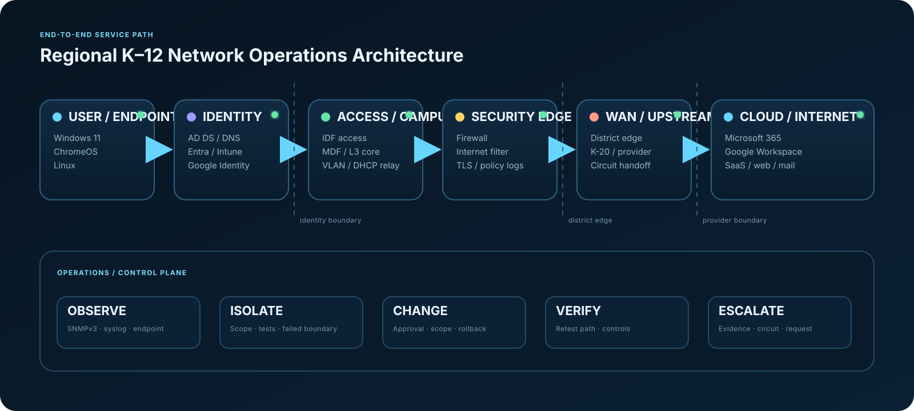

FEATURED OPERATIONS ENGINEERING PROJECT
Regional K–12
Network Operations
A safe, static, evidence-driven 35-district digital twin built to demonstrate how I isolate service failures across endpoint, identity, LAN, security, WAN, cloud, and provider boundaries—then turn the result into a controlled change, defensible escalation, and verified recovery.
Portfolio truth boundary
35 fictional districtssynthetic telemetryreal troubleshooting logicno production access
REGIONAL DIGITAL TWINNormal operations
--:--:--
healthydegradedincident
EVT-BASELINERegional services operating normally
Telemetry, identity, filtering, and upstream connectivity are within the synthetic baseline.
01 · OPERATOR MISSION
A support ticket is only the symptom.
The job is proving where known-good behavior stops.
The project is deliberately organized around an operator workflow rather than a technology checklist. Each investigation moves from user impact to fault boundary, action, validation, and evidence.
- 01Establish scopeIMPACT
One user, one classroom, one building, one district, or the region?
- 02Prove the local pathLOCAL
Endpoint → DHCP → DNS → gateway → VLAN → local service.
- 03Cross trust boundariesPATH
Firewall → filter → WAN → provider → identity/cloud dependency.
- 04Collect evidencePROOF
Timestamps, source/destination, interface state, logs, route and policy context.
- 05Change or escalateACTION
Use the narrowest controlled action at the proven fault domain.
- 06Verify both directionsVERIFY
Confirm the intended service works and security controls still deny what they should.
02 · SERVICE ARCHITECTURE
One instructional application can depend on seven operational layers.
The architecture view is intentionally service-centric. It shows why a web application failure may originate in endpoint state, identity, DNS, a local VLAN, filter policy, WAN transport, or the SaaS provider itself.

DHCP leases, DNS resolution, switching, VLAN assignment, gateways, routing, IDF/MDF uplinks.
Stateful firewall, segmentation, TLS inspection, category filtering, required CDN/API dependencies.
AD, Entra, Intune compliance, Conditional Access, Google identity, shared-resource policy.
District circuit, upstream education network, external DNS path, cloud-provider health and escalation.
03 · EVIDENCE CASEBOOK
Six investigations. Raw artifacts included.
Select a case to inspect the symptom, reasoning path, root fault domain, and the actual synthetic evidence files included in the repository.
INC-WAN-01
P2WAN / provider boundary outage
Select an evidence artifact.
04 · ENGINEERING SYSTEMS
Support engineering plus assurance, forecasting, and control.
VLANs, SVIs, ACLs, DHCP relay, OSPF/BGP concepts, MDF/IDF paths, WAN handoffs and NOC evidence.
routingswitchingSNMPv3
Domain/DNS validation, device registration, MDM state, Conditional Access and Microsoft 365 dependencies.
AD DSEntraIntune
Managed device state, organizational units, sharing policy, browser controls and Google identity.
ChromeOSDriveAdmin
Student/staff/guest segmentation, web-filter exceptions, firewall policy, privileged access and negative testing.
ACLfilterfirewall
Machine-readable controls compare expected and observed device configuration with severity-ranked deviations.
baselinedriftCI
Eight months of synthetic utilization history drives transparent trend and upgrade-watch decisions.
P95forecastWAN
05 · AUTOMATION
The repository can answer operational questions, not just display them.
The Python CLI and browser terminal expose the same mental model: validate inventory, triage incidents, inspect dependencies, score change readiness, identify drift, and package evidence.
[READY] Type help to inspect the operations model.
06 · VALIDATION & CREDIBILITY
Portfolio quality should survive inspection.
The strongest claim in this project is not “I know networking.” It is that the repository connects source data, operational reasoning, UI state, validation, and evidence in a reproducible way.
Inventory, triage, dependency, SLA, drift, change and capacity logic are exercised by unit tests.
Python unittestRequired views, assets, evidence-rich cases and browser data exports are verified before packaging.
Portfolio validatorThe public landing page and operations center are syntax-checked with Node before release.
node --checkNo credentials, backend shell, production targets, repository write path, or external network requests are required.
GitHub Pages compatible35districts
70sites
6evidence-rich cases
20incident scenarios
288telemetry samples
18+automated tests
INTERVIEW DEMO
Run the regional operations shift.
Start a guided mission, inject an incident, click through the district digital twin, inspect raw evidence, use the virtual terminal, and build the escalation handoff.